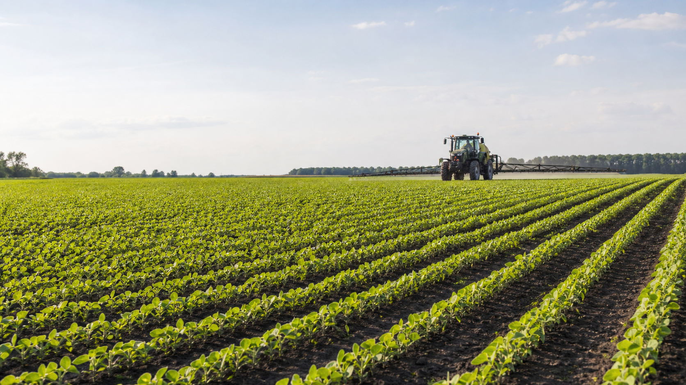

собственная сельхозтехника для полевых работ
Защита растений, питание, сервис
Комплексные решения для защиты и питания культур
Пестициды, микроудобрения «Янтари», агросопровождение и полевые сервисы для сельхозпроизводителей.

специалистов в штате компании
сопровождение по защите и питанию культур
поставка и сервис в ключевых агрорегионах
собственная линейка жидких микроудобрений
Направления продукции
СЗР и питание в единой технологической логике
Каталог построен вокруг задач хозяйства: защита посевов, поддержка питания, снижение рисков в сезоне.
Гербициды
Решения для контроля сорной растительности в основных культурах.
Смотреть разделФунгициды
Препараты для профилактики и контроля заболеваний в период вегетации.
Смотреть разделИнсектициды
Инструменты для защиты культур от вредителей с учетом фазы развития.
Смотреть разделПротравители и фумиганты
Предпосевная защита, обработка партий и услуги фумигации.
Смотреть разделМикроудобрения «Янтари»
Жидкие органоминеральные продукты для семян и листовых обработок.
Смотреть разделЖидкие микроудобрения для профессионального результата
Линейка органоминеральных удобрений для предпосевной обработки и применения по вегетации. Продукты подбираются как часть общей схемы защиты и питания.
Подробнее о линейкеЯнтари Семена
Предпосевная обработка семенного материала.
Янтари Профи
Поддержка растений в активные фазы роста.
Янтари Азот
Коррекция азотного питания по листу.
Янтари Калий
Питание в периоды формирования урожая.
Янтари Бор
Решение задач по борному питанию культур.
Другие продукты
Специализированные составы под конкретные дефициты.
Культуры
Схемы защиты и питания культур
Структура под реальные технологические карты: СЗР, микроудобрения и сервисные операции в одной последовательности.
Подход
Почему выбирают Pesticides RU
Проверенные препараты
Работа с решениями, которые можно встроить в технологические карты хозяйства.
Агросопровождение
Специалисты помогают учитывать культуру, регион, фазу и историю поля.
Контроль качества
Собственная продуктовая линейка и понятная ответственность за рекомендации.
Оперативная доставка
Логистика под сезонные окна и график полевых работ.
Индивидуальный подбор
Решения под задачу хозяйства, а не универсальная подборка из каталога.
Консультация
Нужна консультация агронома?
Опишите культуру, регион и задачу. Специалисты подберут оптимальную схему защиты и питания.